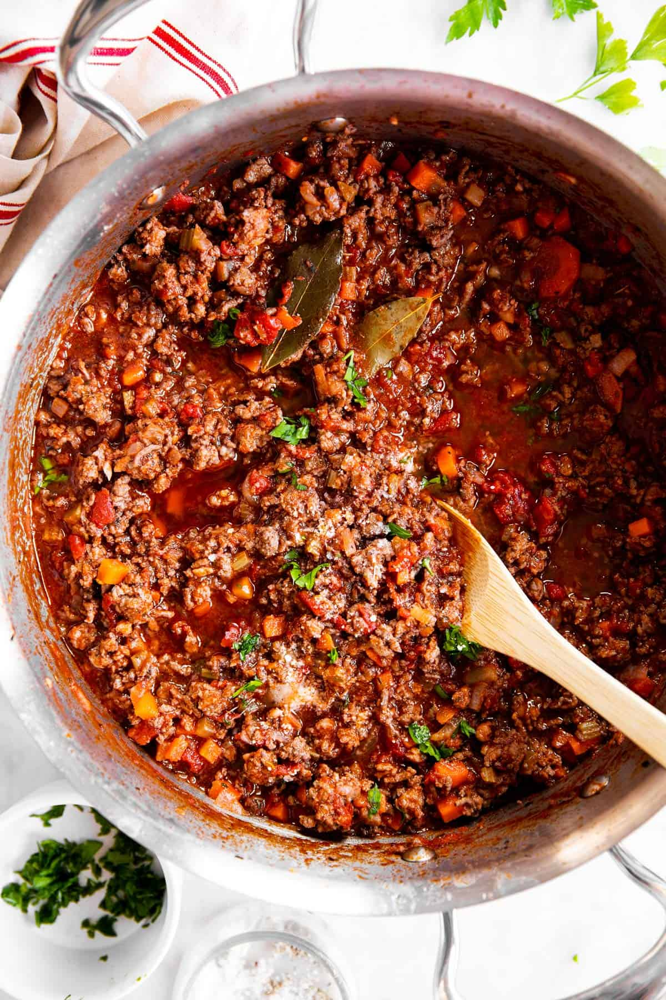

Bolognese Sauce

Description
A rich and meaty Italian sauce that's perfect for pasta.
Ingredients
- 500g minced beef
- 1 onion, chopped
- 2 cloves of garlic, minced
- 1 can of crushed tomatoes
- 1/4 cup red wine (optional)
- 1 tsp dried basil
- 1 tsp dried oregano
- Salt and pepper to taste
Steps
- In a pot, sauté onions and garlic until translucent.
- Add the minced beef and cook until browned.
- Add tomatoes, wine, and spices. Simmer for at least 30 minutes, stirring occasionally.